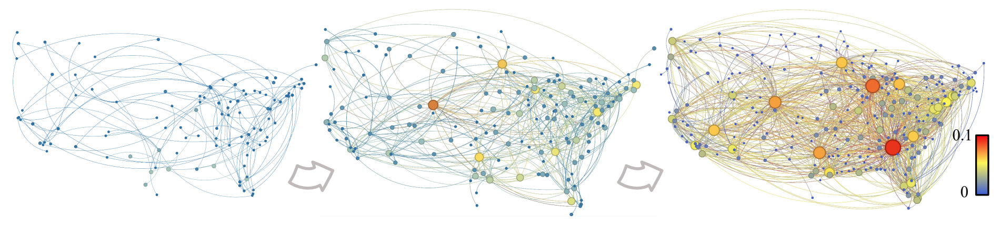
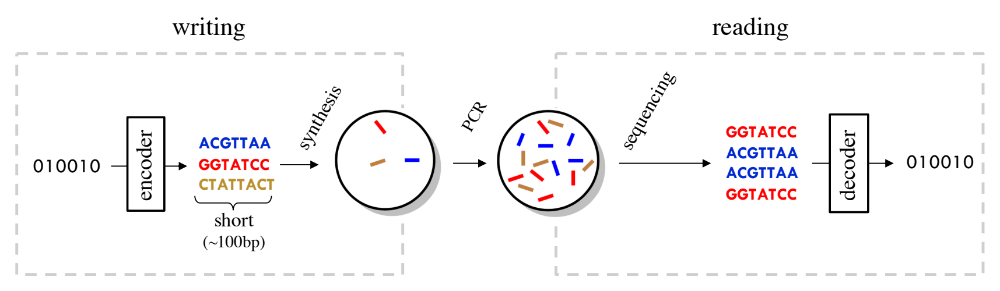

Research
Understanding the limits of data science and designing efficient algorithms.
My research lies at the intersection of information theory, machine learning, and computational biology. I am interested in what can be learned or recovered from limited observations, and how to use those observations efficiently.
Efficient and adaptive algorithms for data science
How can we make learning algorithms faster by looking at less data? My work explores randomized sampling and adaptive computation as tools for reducing the cost of core data science and machine learning tasks. The goal is to spend computation where it is most informative, while retaining the accuracy and reliability that make an algorithm useful. Applications include clustering, similarity search, graph learning, and eigenvector estimation.


Selected papers
- Dynamic DBSCAN with Euler Tour Sequences (AISTATS, 2025)
- Faster Maximum Inner Product Search in High Dimensions (ICML, 2024)
- Efficient Learning of Linear Graph Neural Networks via Node Subsampling (NeurIPS, 2023)
- BanditPAM++: Faster k-medoids Clustering (NeurIPS, 2023)
- Adaptive Power Method: Eigenvector Estimation from Sampled Data (ALT, 2023)
- MABSplit: Faster Forest Training Using Multi-Armed Bandits (NeurIPS, 2022)
Information theory for DNA storage, genomics, and unordered data
DNA storage and genome sequencing share an unusual feature: information is observed through a set of out-of-order fragments. What can be recovered from these observations, and how much information can such systems reliably preserve? I am interested in mathematical models of fragmentation, sampling, noise, and loss of order that allow us to study fundamental limits and guide the design of coding and reconstruction methods.


Selected papers
- Capacity of Frequency-based Channels: Encoding Information in Molecular Concentrations (IEEE Transactions on Information Theory, 2025)
- An Information Theory for Out-of-Order Media With Applications in DNA Data Storage (IEEE Transactions on Molecular, Biological, and Multi-Scale Communications, 2024)
- Fundamental Limits of Reference-Based Sequence Reordering (IEEE Transactions on Information Theory, 2024)
- Information-Theoretic Foundations of DNA Data Storage (Foundations and Trends in Communications and Information Theory, 2022)
- Coded Shotgun Sequencing (IEEE Journal on Selected Areas in Information Theory, 2022)
Computational genomics and biological data analysis
How can we turn large collections of biological measurements into useful information? I am interested in developing computational methods for comparing, aligning, assembling, and grouping DNA sequences, as well as analyzing data from different biological data modalities. A recurring theme is connecting the structure of the data to efficient algorithms: using statistical and information-theoretic insights to decide which computations are needed and which can be avoided.
Selected papers
- Fast Multiple Sequence Alignment via Multi-Armed Bandits (Bioinformatics, 2024)
- LexicHash: sequence similarity estimation via lexicographic comparison of hashes (Bioinformatics, 2023)
- The Metagenomic Binning Problem: Clustering Markov Sequences (IEEE Transactions on Molecular, Biological, and Multi-Scale Communications, 2023)
- JIND: Joint Integration and Discrimination for Automated Single-Cell Annotation (Bioinformatics, 2022)
- An unsupervised learning approach to identify novel signatures of health and disease from multimodal data (Genome Medicine, 2020)
- HINGE: Long-Read Assembly Achieves Optimal Repeat Resolution (Genome Research, 2017)
Statistical inference and learning with structure
Observations often carry structure: neighboring variables may be correlated, samples may come from distinct clusters, or a sequence may be visible only through incomplete traces. I study how these dependencies affect what can be inferred and how many observations are needed. This direction connects fundamental recovery limits with algorithm design, with problems ranging from group testing to clustering and sequence reconstruction.
Selected papers
- Fundamental Limits of Non-Adaptive Group Testing with Markovian Correlation (AISTATS, 2026)
- Guaranteed Recovery of Unambiguous Clusters (ISIT, 2025)
- Substring Density Estimation from Traces (IEEE Transactions on Information Theory, 2024)
- Fundamental Limits of Multiple Sequence Reconstruction from Substrings (ISIT, 2023)
- Finding a Burst of Positives via Nonadaptive Semiquantitative Group Testing (ISIT, 2023)
Information theory and wireless communications
My earlier research studied the fundamental limits of communication in wireless networks. How should information be relayed across multiple hops, how can interference be managed, and what rates are achievable when several users communicate simultaneously? This work examines network capacity, degrees of freedom, compression, and energy efficiency, using mathematical models to understand both the possibilities and the limitations of communication systems.
Selected papers
- Network Compression: Worst-Case Analysis (IEEE Transactions on Information Theory, 2015)
- Multihop Wireless Networks: A Unified Approach to Relaying and Interference Management (Foundations and Trends in Networking, 2014)
- Degrees of Freedom of Two-Hop Wireless Networks: Everyone Gets the Entire Cake (IEEE Transactions on Information Theory, 2014)
- Computing Half-Duplex Schedules in Gaussian Relay Networks via Min-Cut Approximations (IEEE Transactions on Information Theory, 2014)
- Worst-Case Additive Noise in Wireless Networks (IEEE Transactions on Information Theory, 2013)